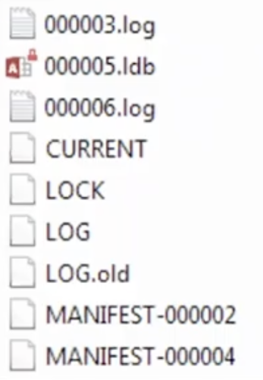

In the process of investigating Toy PD case, I’ve realised I lack the information about different browser files. This is an attempt to fill that gap.
Many browsers are based on Chromium engine, that’s why they will have similar artifacts: Chrome, Opera, new Edge, Brave, Vivaldi. Also, there are lots of Electron applications that share some artifacts with them. Chrome is the point of convergence for all these application. On Magnet Summit it was suggested to explore and learn Chrome and it’s artifacts as well as OS common artifacts due to its popularity and reusing some of its components.
IndexedDB & LevelDB
📂 On Windows machine it’s stored here: $USER\AppData\Local\Google\Chrome\User Data\Default\IndexedDB. Contains multiple folders, one for each domain. Usually have the extension leveldb.
📂 On MacOS is stored here: ~/Library/Application Support/Google/Chrome.
📂 On Android devices you can sometimes find these filese here (for each application that uses WebViews): <app_package>/app_webview/Default/Local Storage/ and <app_package>/app_webview/Default/Session Storage/.
The LevelDB store for a particular domain will be found in the IndexedDB folder with a name in the form: [host with concurrent separators replaced an underscore]_[dbid].indexeddb.leveldb, e.g. for https://archive.org the folder would be named: https_archive.org_0.indexeddb.leveldb.
Example:

There are always CURRENT, LOCK, LOG and at least one MANIFEST. Only *.log and *.ldb files contain data. Other files above contain metadata.
Each time a key-value pair is created (key being updated), it’s logged in one of those *.log files. When these logs are filled up, all these files (16 by default) are consolidated into a Level Zero LDB. When data is updates or deleted, these events are put into the logs. So, we are able to get those previous data values. When Level Zero LDB (4 files) are filled out, they are merged (sorted and de-duplicated) into one Level One file. All deleted data and updated will be removed.
Logs and Level Zero LDB can potentially contain old versions of or deleted records, however, when moved at last to the Level One LDB, these records that contain deleted or updated records get erased. However Level One LDB might contain logically deleted data, if this data was marked for deletion in log or Level Zero LDB.
Cookies
An example of creating a cookie:
document.cookie = "username=John Doe; expires=Thu, 18 Dec 2013 12:00:00 UTC";
There are several attacks on cookies (session hijaking, session fixation, reversing cookies when applicable).
WebStorage
An example of using localStorage:
localStorage.setItem('myCat', 'Tom');
const cat = localStorage.getItem('myCat');
localStorage.removeItem('myCat');
localStorage.clear();
An example of using sessionStorage:
// Save data to sessionStorage
sessionStorage.setItem('key', 'value');
// Get saved data from sessionStorage
let data = sessionStorage.getItem('key');
// Remove saved data from sessionStorage
sessionStorage.removeItem('key');
// Remove all saved data from sessionStorage
sessionStorage.clear();
Data in localStorage doesn’t expire, data in sessionStorage is cleared when the page session ends (is valid only for one particular tab). Openning the same web-application in another tab creates a new page session, which is different from the cookie mechanism. But! Duplicating the tab copies the tab’s sessionStorage into the new tab, i.e. and from that moment forward they might start being different.
As for the localStorage, private mode creates a new localStorage that’s cleared is cleared when the last “private” tab is closed.
Both localStorage and sessionStorage are read-only.
File System API
Psedo file system like environment for a web application.
WebSQL
Was never really officially documented, but now it’s deprecated (lot’s of vendor specific stuff), but was used some time ago, containing lots of interesting artifacts. SQLite.
Application Cache
Was used to cache web-application’s data locally. It’s deprecated but still available in most browsers.
Firefox
Localstore.rdf
No real value for the examiner here, since it contains customized data on the interface. Can be cleared in the GUI with “Reset toolbars and controls” option. [1]
addons.json
I think, the file name speaks for itself. It contains all the data for installed addons.
References
[1] About Localstore.rdf file
[2] Browser forensics
[3] Working with IndexedDB
[4] Magnet Summit 2021, Hang On! That’s Not SQLite! Chrome, Electron, and LevelDB
[5] About localStorage
[6] Hang on! That’s not SQLite! Chrome, Electron and LevelDB, article